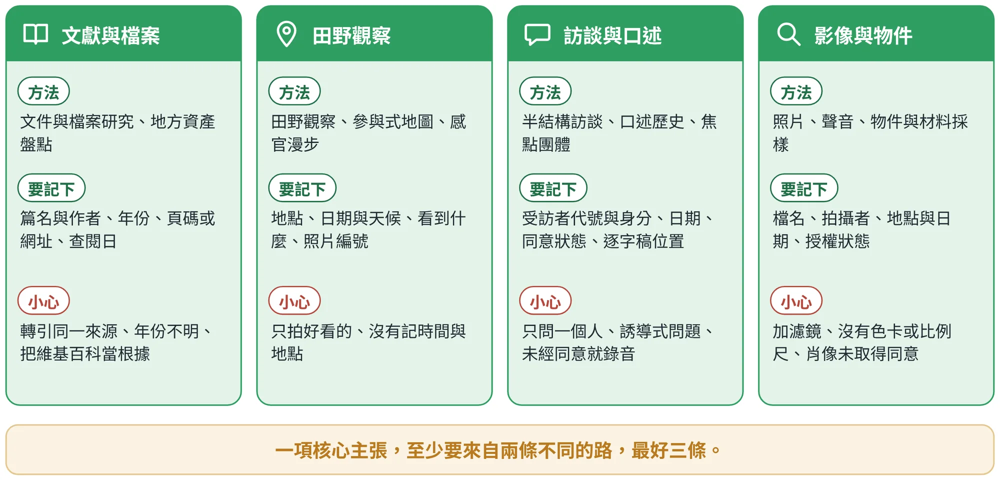
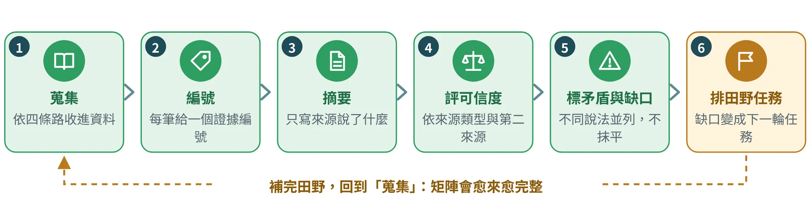
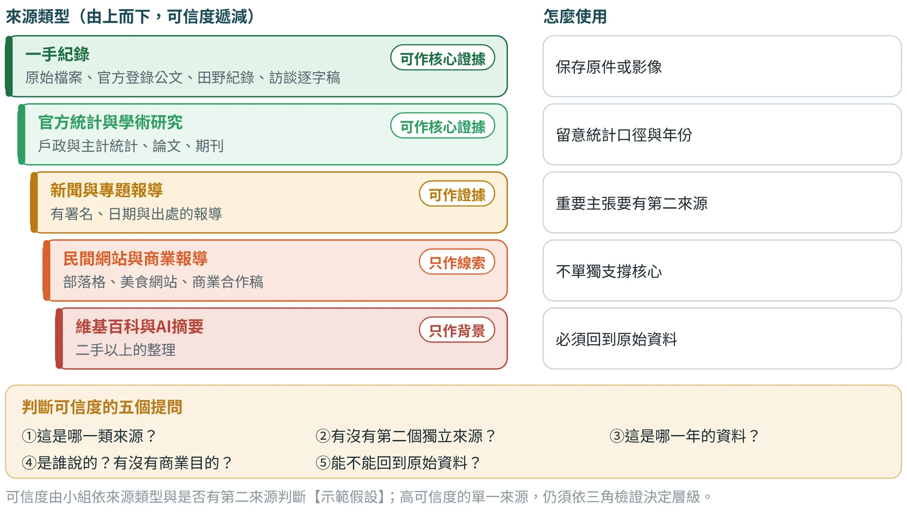
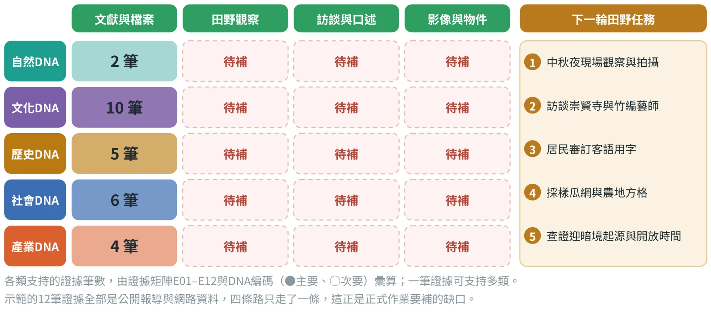
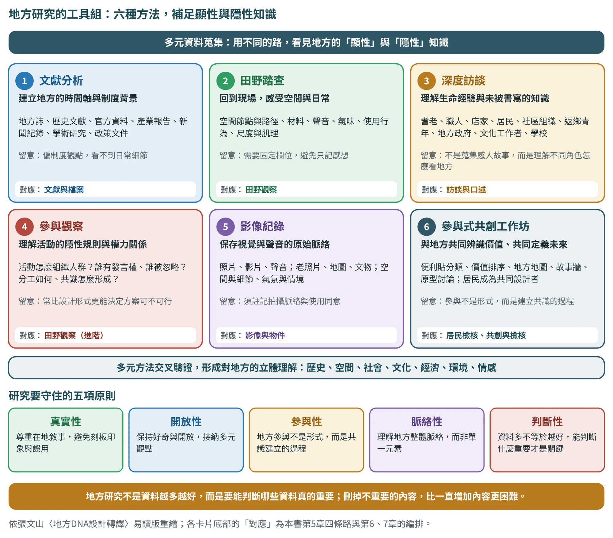

證據蒐集
先把地方的證據一筆一筆收好，再談DNA
5.1為什麼先做證據：把「我覺得」換成「來源說」#
地方設計最常見的失誤，不是畫得不好，而是出發點不穩：一句「這裡有很濃的客家味」，後面的色彩、圖紋與商品都可能是想像。張文山在品質規範裡把第一條定為「可追溯性」：每一項DNA、語彙、色彩、圖紋與遊程節點，都要能回溯到資料來源。這一章的工作，就是把這個要求變成一張你每天都在更新的表。
表5.1用崙背的三句常見說法，示範「印象式」與「證據式」的差別。
| 印象式說法 | 證據式寫法 | 差別在哪裡 |
|---|---|---|
| 崙背有很濃的客家味。 | 崙背、二崙、西螺一帶是全台詔安客最密集的聚落；報導以「約2.5萬人」估計，未附統計來源〔崙1〕〔崙5〕。 | 指出是哪一群客家人、什麼範圍；數字標明是估計值 |
| 迎暗境已經有幾十年的歷史。 | 2025年1月登錄為雲林縣民俗；起源年份在〔崙2〕與〔崙3〕的說法不一致，暫不寫年份待確認。 | 不確定的地方直接寫「待確認」，不用感覺填補 |
| 崙背是芹菜之鄉。 | 查證未找到可靠來源；〔崙14〕只列出結球萵苣的產區名單，因此不採用。 | 查不到就排除，並把排除理由記下來 |
崙背示範的證據、來源與查證紀錄整理自《崙背鄉特色伴手禮示範說明書》；示範資料全部來自公開報導與網路資料（2026年10月17日查閱），尚未做田野與訪談。
5.2四條路：證據從哪裡來#
地方證據可以從四條路取得（圖5.1）：文獻與檔案、田野觀察、訪談與口述、影像與物件。張文山的方法把它們寫成「建議方法」：文件與檔案研究、地方資產盤點、田野觀察、參與式地圖、半結構訪談、口述歷史、照片、聲音與物件採樣。四條路各有所長：文獻告訴你別人怎麼說，田野告訴你你看到什麼，訪談告訴你居民怎麼說，影像與物件讓證據可以被再看一次。

三角檢證的「獨立」，指的就是走不同的路。三篇報導引用同一份新聞稿，只算一個來源；同一位受訪者在三個場合說的話，也只算一個來源。核心主張至少要走兩條路，最好三條。
表5.2把四條路對應到本課程的工具範本與編號方式，並列出崙背示範目前走了哪幾條。
| 路 | 對應範本 | 建議的編號方式（本書建議） | 崙背示範現況 |
|---|---|---|---|
| 文獻與檔案 | 範本01（文獻欄）、證據矩陣 | 證據編號E01、E02…；來源另編流水號，並記年份、頁碼或網址、查閱日 | 已做：27筆來源、整理為12筆證據 |
| 田野觀察 | 範本01、03 | 照片P-001…；田野紀錄標日期、天候、地點與座標 | 尚未做待補 |
| 訪談與口述 | 範本02 | 受訪者代號I-01…（不寫真名）；記逐字稿位置與同意狀態 | 尚未做待補 |
| 影像與物件 | 範本01、07、08 | 檔名＝日期＋地點＋序號；附拍攝者與授權狀態（編號方式為本書建議，各組可自訂） | 尚未做待補 |
5.3證據矩陣：把資料變成一張可以查核的表#
證據矩陣是這一階段最重要的成果，也是第6章DNA萃取的輸入。它的工作方式像一條迴圈（圖5.2）：蒐集、編號、摘要、評可信度、標出矛盾與缺口，最後把缺口排成田野任務，補完再回到蒐集。

每一列是一筆證據，建議至少有七個欄位：編號、來源、年份（或田野日期）、摘要、支持的DNA、可信度、矛盾或缺口。三個寫作規則可以避免大多數問題：
- 一列一個說法：一篇報導裡有三個重點，就拆成三列，各自評可信度。
- 摘要只寫來源說了什麼：不要在摘要裡加入你的詮釋；詮釋放到第6章的DNA卡。
- 矛盾與缺口欄不能空白：沒有矛盾就寫「暫無，待第二來源」，這樣才看得出你有沒有檢查。
表5.3節錄崙背示範證據矩陣的六列（完整12列見第17章與附錄）。留意「矛盾或缺口」欄：它每一列都有內容，而且直接決定下一輪田野任務。
| 編號 | 來源 | 年份 | 摘要（只寫來源說了什麼） | DNA | 可信度 | 矛盾或缺口 |
|---|---|---|---|---|---|---|
| E01 | 〔崙3〕聯合新聞網 | 2025 | 中秋夜吸引逾千人，居民提自製竹火把遊庄，隊伍超過1公里；早年農村盛行，如今只剩崙背水汴頭完整保留 | D2 | 中高 | 單一事件報導；起源年份與〔2〕不一致 |
| E02 | 〔崙2〕公視新聞網 | 2025 | 2025年1月登錄為雲林縣民俗，10月6日授證；文資委員指出原本的村庄防衛功能已轉化為宗教意義 | D2 | 中高 | 起源寫「民國45年」，與〔3〕所述1929年不同 |
| E03 | 〔崙7〕TVBS／中央社、〔崙4〕微笑台灣 | 2017 2021 | 先民夜裡持火把「顧更」守護家園；村民手工剖竹製作火把、搭建寮舍；詔安客語面臨流失 | D2 D1 | 中 | 「顧更寮」「隘丁寮」寫法不一 |
| E06 | 〔崙10〕自由時報 | 2026 | 識得詔安客語者約2.5萬人、會講者約9千人；羅厝村「詔安好伴屋」以老幼共學教客語；會說客語的學生反被同儕嘲笑 | D1 D5 | 中高 | 單一專題報導，缺教學成效數據 |
| E08 | 〔崙11〕教育部客語辭典 | 年份未載 | 羅厝村每年正月十五的「擐雞酒」：新生男嬰家庭帶公雞與米酒祭拜，雞頭、雞尾椎、雞腳、雞翅合稱「四點金」 | D6 | 高 | 只有一個來源；〔9〕寫作「摜雞酒」 |
| E11 | 〔崙22〕〔崙27〕維基百科、〔崙15〕〔崙16〕媒體 | 2019–2026 | 崙背舊稱布嶼稟，1920年設崙背庄，早年有「小上海」之稱；酪農專區；崙背鮮乳為縣府與台農鮮乳廠的合作品牌 | D4 D7 D8 | 低中 | 二手整理與商業報導，須回原始資料 |
證據摘要與可信度為教學示範的判斷示範假設；來源標示〔崙n〕對應附錄F的崙背來源編號。DNA欄為第6章使用的候選編號（D1–D8）。
5.4可信度：不是每一個來源都一樣重#
可信度不是在表格上填「高、中、低」就好，而是要說得出理由。圖5.3把來源由上而下分成五個層級：一手紀錄、官方統計與學術研究、新聞專題、民間網站與商業報導、維基百科與AI摘要。層級愈高，愈可作為核心證據；層級愈低，愈要回到原始資料。

層級只是起點，還要配合五個提問一起判斷：這是哪一類來源？有沒有第二個獨立來源？是哪一年的資料？是誰說的、有沒有商業目的？能不能回到原始資料？崙背示範裡有兩個很好的例子：
一份文件說的事，是哪一種事？證據狀態的八個標籤
審查九個案例時，最常遇到的問題不是「來源不可信」，而是同一份文件裡混著不同狀態的敘述：有的是已經發生的事，有的是提案書裡的目標，有的只是簡報裡的構想。如果都寫成「某某地方做到了……」，讀者就會把目標當成成果。本版用八個標籤標示每一個設計項目或數字的狀態（表5.4），在案例表格的「狀態」欄中一律使用。
| 狀態 | 意思 | 本書的例子 | 引用時怎麼寫 |
|---|---|---|---|
| 已實施 | 已經發生，有時間與紀錄 | 北港2023光影藝術節；居鑾鐵道節（2025年11月）；斗南的七號倉庫與在地品牌 | 可寫成成果，仍須附來源與年份 |
| 計畫中 | 已有排程或資源，尚未完成 | 斗南的「技職永續方舟」（三年擴展據點） | 寫「計畫」，不寫成效 |
| 提案目標 | 提案書上的目標與經費 | 土庫旅店的留宿87,600人次／年；鹿谷的人次4,165→7,000 | 一律寫「目標」，並註明提案年份 |
| 構想 | 簡報提出的方向，沒有資源與時程 | 鳥取、居鑾與怡保簡報中的設計項目 | 寫「構想」；可用於教學示範 |
| 設計稿 | 設計作品已完成，尚未落地 | 古坑的九色與五套紋樣 | 寫「設計稿」，不寫「已應用」 |
| 前期成果 | 小規模測試或資料庫 | 鹿谷窯火再生的191道配方、1:2比例 | 寫出數據與條件，並說明限制 |
| 示範假設 | 作者或本書為教學所作的估算與設計 | 斗南的減碳估算；埔里的水路徑與共同色票 | 加示範假設，附算式或理由 |
| 待確認 | 只有單一來源，或不同文件口徑不一 | 北港人口38,437／28,870；居鑾的族群名單 | 加待確認，列入附錄E.7 |
八個標籤為本書依九個案例的審查整理，與5.4節的來源可信度階梯並用：階梯判斷「來源」，標籤判斷「這件事走到哪一步」。
用算術檢查提案的目標：土庫的例子
狀態標籤告訴你「這是目標」，算術則告訴你「這個目標的假設是什麼」。土庫鎮的提案書〔土1〕把國際學習旅店的目標寫成「留宿≥87,600人次／年、年營業額2.4億元」（圖5.4）。87,600剛好等於80間客房×365天×每房3人，也就是全年每晚客滿；2.4億元除以87,600人次，約每人次2,740元。這不表示提案不好，而是這兩個數字是「滿載的上限」，不是預測：引用時只能寫「提案目標」，教學時則可以拿來示範如何拆解假設。
5.5來源說法不一致時怎麼辦#
地方資料很少完全一致：年份不同、用字不同、數字口徑不同，甚至說法互相衝突。不要為了讓資料好看而悄悄抹平。 本書建議用五種方式處理，並且每一次處理都記進「來源衝突紀錄」：
- 並列：兩種說法都寫，註明各自的來源（例如寫「民國45年〔崙2〕」與「1929年〔崙3〕」）。
- 擇一並註明：選擇較有依據者（例如官方辭典的用字），並寫下為什麼選它。
- 降級為背景：資料不足以支持核心，只作為背景說明，並標示為估計值或二手整理。
- 排除：查不到可靠來源的說法，直接排除，並記下排除理由。
- 送審訂：用字、讀音、起源等只有居民或專家才能判斷的事項，列入待確認，請在地人審訂。
表5.5是崙背示範實際碰到的衝突與處理方式。這張表在期末時一併交出，它比漂亮的結論更能說明你做事嚴不嚴謹。
| 項目 | 來源狀況 | 處理方式 |
|---|---|---|
| 迎暗境的起源 | 〔崙2〕寫「民國45年」；〔崙3〕所述起於1929年西螺的「迎夜景」 | 不寫起源年份；列入待確認（並列） |
| 顧更寮／隘丁寮 | 報導用字不一，〔崙3〕作「顧更寮」 | 暫採「顧更寮」，交居民檢核（送審訂） |
| 擐雞酒／摜雞酒 | 〔崙11〕作「擐雞酒」，〔崙9〕作「摜雞酒」 | 依教育部客語辭典〔崙11〕（擇一並註明） |
| 詔安客人口 | 約2.5萬人為報導的估計值，口徑不一，未附統計來源 | 只作背景並標示為估計（降級） |
| 洋香瓜面積 | 〔崙13〕為2014年資料，已逾十年 | 標示年份；正式作業更新（並列年份） |
| 詔安客家文化館營業時間 | 〔崙19〕〔崙20〕說法不一 | 不引用營業時間，到館確認（送審訂） |
| 阿榮肉圓「祖傳配方」 | 〔崙17〕為老闆的說法，未獨立查證 | 不當作事實；該POI不列入（排除） |
| 芹菜之鄉 | 查證沒有找到可靠來源；〔崙14〕只列出結球萵苣產區 | 不採用（排除） |
處理方式欄括號內為本書的五種處理方式分類，是為了教學加上的標註。
列名不是同意：把主張寫成「主張—資料—限制—下一步」
除了處理衝突的說法，還有一種常見的跳躍：把「資料裡提到」當成「已經確認」。三角檢證也不是湊到兩個網址就算完成；兩篇報導若引用同一份新聞稿，可能仍然只有一條證據鏈。核心主張要由不同角色、不同資料類型與不同時間的來源交叉支持，課堂上可以先以兩類來源作為起始門檻，重要的主張再補第三類。表5.6用三個例子，示範如何把一句主張拆成四欄，讓缺口一眼就看得到。
| 主張 | 目前資料 | 限制 | 下一步 |
|---|---|---|---|
| 竹杯可安全裝熱飲 | 教學概念與產品外觀 | 外觀不能證明適用溫度或材質安全 | 向供應者確認規格與適用的測試 |
| 夜巡具有地方記憶 | 公開的文化資料 | 尚未取得居民對商品化的回應 | 訪談保存者、居民與年輕的參與者 |
| 店家願意供貨 | 資源盤點中列為候選 | 列名不是合作同意 | 確認交期、報價、品質與責任 |
三列皆為教學示範：目前資料只能支持「有研究線索」，不能支持「已完成確認」；實際內容須以本組取得的資料替換。
5.6田野觀察與訪談：補上文獻給不了的證據#
文獻能讓你快速入門，但文獻不能替你走進現場，也不能代替居民說話。田野有兩項基本功：觀察紀錄，與半結構訪談。
一、田野觀察：觀察與詮釋分開寫
範本01（地方DNA田野觀察與證據紀錄表）的核心設計，是把「看到什麼」與「我怎麼解讀」分成兩個欄位。常見的田野筆記，會把「廟埕有很多人，感覺很有凝聚力」寫成一句；而分欄的寫法是：觀察欄只寫「晚上7點，廟埕約三十人，有人提竹火把」，詮釋欄才寫「可能與迎暗境的召集有關」。這樣你回頭整理時，才知道哪些是證據，哪些是猜測。
| 建議欄位 | 怎麼寫 |
|---|---|
| 日期、天候、時間 | 同一地點在不同時間（白天、夜晚、節慶日）會有不同的證據，所以要記下 |
| 地點與座標 | 寫清楚地址或座標；用手機定位存下，不要事後憑印象補 |
| DNA類型（初判） | 自然、文化、歷史、社會、產業；一個地點可以同時屬於多類 |
| 觀察描述（只寫看到、聽到的） | 物件的形狀、材料、顏色、聲音、人的動作；不寫「很有氣氛」這類形容 |
| 照片或錄音編號 | 與觀察描述互相對照；人物肖像另記同意狀態 |
| 我的解讀（另欄） | 推測、聯想與問題；每一項標「待驗證」，並寫下要問誰、查什麼 |
欄位設計依範本01的用途整理，並加入本書建議的「觀察與解讀分欄」。
詮釋之後，其實還有第三層：待測假設。例如「三位旅客在盒前停留，其中兩人詢問能否放進背包」是觀察；「包裝可能太大」是解釋；「縮小盒子會提升購買」則是尚待測試的假設。若一開始就把三者混寫成一句，後面請AI做摘要時，很容易把推論變成事實。整理田野紀錄時，可以把一筆資料拆成觀察、解釋、假設三欄；若找不到觀察的依據，解釋就應改寫成待探索的問題。
二、半結構訪談：有大綱，但不照唸
半結構訪談是指事先準備好大綱，但可以依受訪者的回答追問與調整順序。表5.8提出一份五段式大綱（本書建議編排；範本02提供正式表格），每一段都附上問法示例與要避免的問法。
| 段落 | 目的 | 問法示例 | 要避免 |
|---|---|---|---|
| ① 開場與同意 | 說明目的、確認可否錄音與引用 | 「這份訪談是課程研究，想了解…；可以錄音嗎？內容會怎麼使用，我先跟您說明。」 | 沒說明就開始錄音 |
| ② 個人與地方的關係 | 知道這位受訪者站在什麼位置說話 | 「您從什麼時候開始住在這裡／做這件事？」 | 直接問結論，忽略身分 |
| ③ 日常與經驗 | 得到具體的故事與細節 | 「請說說您第一次參加（做）…的情形。」「那天的聲音、氣味是什麼？」 | 「是不是很有歷史？」這類誘導式問題 |
| ④ 變遷與傳承 | 了解過去、現在與困難 | 「跟小時候比，現在有什麼不一樣？誰還在做？」 | 只聽美好的說法，不問困難 |
| ⑤ 收尾與推薦 | 補充遺漏，找到下一位受訪者 | 「還有誰我們一定要請教？現場有沒有可以拍照的地方？」 | 忘了確認授權與下一次聯絡 |
三、同意與倫理：先問，再錄，再用
任何訪談、錄音、拍照，都要先取得同意，並把同意狀態寫下來（範本02含「受訪者基本資料與同意紀錄」）。建議至少記錄：受訪者代號與身分、日期與地點、訪談者、同意的項目（錄音、逐字稿引用、姓名公開、肖像使用）、可公開的程度、撤回同意的聯絡方式。涉及未成年人、宗教儀式與私人記憶的內容，要特別小心；崙背示範的待確認總表就把「學童肖像與聲音須監護人同意」列在最優先。實際的審查與個資規範，請依學校與研究倫理的要求辦理待確認。
5.7覆蓋檢查：看見空白，才知道下一步#
證據收到一個程度，要做一次「覆蓋檢查」：把證據矩陣依「五類DNA × 四條路」重新整理，看看哪些格子有資料、哪些格子是空的（圖5.5）。這張圖是崙背示範依12筆證據與DNA編碼計算出來的。

崙背示範的情況，是初學者最典型的狀態：文獻很多，現場很少。這件事有一個直接的後果。以「澹仔火與迎暗境」為例，示範有四筆來自不同媒體與機構的報導，所以暫列為主題軸；但它們都屬於「文獻」這一條路，嚴格說還沒有完成三角檢證，所以示範把它標為待確認，要等田野與訪談補上，才能成為定論。
缺口要寫成可以執行的任務，而不是「再多做田野」。表5.9把崙背示範的待確認事項，改寫成「去哪裡、問誰、帶回什麼」的田野任務。
| 缺口 | 任務 | 對象 | 要帶回的證據 |
|---|---|---|---|
| 田野、影像證據全無 | 中秋夜到水汴頭現場觀察與拍攝（含光線、聲音、人群動線） | 現場活動、居民 | 田野紀錄、照片P-編號、錄音 |
| 迎暗境起源說法不一；名稱授權未確認 | 訪談水汴頭崇賢寺的管理者；確認名稱與火把意象使用方式 | 崇賢寺 | 訪談逐字稿I-01、書面同意 |
| 客語用字、讀音未審訂 | 請居民審訂7組文化語彙與客語一句的用字 | 詔安好伴屋與居民 | 審訂紀錄與修正版 |
| 竹編技術只有報導 | 訪談竹編藝師並採樣竹篾編法與火把構造 | 竹編藝師 | 訪談紀錄、物件照片、尺寸 |
| 瓜與菜的資料偏舊（2014） | 現場拍攝瓜網與農地方格，更新洋香瓜面積 | 農民、農會 | 照片、最新統計或口述 |
任務內容改寫自崙背示範說明書的〈待確認總表〉；對象與到訪時間須正式聯絡後確認待確認。
5.8研究方法的組合：六種方法，補足顯性與隱性知識#
前面幾節把證據分成四條路，並把重心放在文獻、田野觀察與訪談。作者的易讀版還強調一件事：地方DNA的研究不能依賴直覺，也不能只憑外部觀察者的印象。沒有充分研究就直接進入創意發想，常造成兩種問題：設計成果與地方脈絡斷裂；地方文化被表面化、符號化，甚至誤用。因此第一個關鍵步驟，是建立嚴謹而開放的研究方法組合：文獻分析、田野踏查、深度訪談、參與觀察、影像紀錄，以及參與式共創工作坊（圖5.6）。

| 方法 | 補足什麼 | 做法重點 | 要留意 | 對應 |
|---|---|---|---|---|
| 文獻分析 | 地方的時間軸與制度背景 | 地方誌、官方資料、歷史文獻、產業報告、新聞紀錄、學術研究與政策文件；追問地方如何被描述、被治理與被發展 | 偏制度觀點，未必呈現日常生活細節 | 文獻與檔案（5.2至5.5） |
| 田野踏查 | 空間、材料與日常 | 回到現場，觀察空間節點、路徑、材料、聲音、氣味、使用行為與身體感受。地方DNA也存在於街道的尺度、廟埕的聚集方式、市場的節奏、車站的聲音、農田的氣味與牆面的肌理 | 要用固定欄位記錄，避免只寫感想 | 田野觀察（5.6、範本01） |
| 深度訪談 | 生命經驗與未被書寫的知識 | 耆老、職人、店家、居民、社區組織、返鄉青年、地方政府、文化工作者與學校，都是地方知識的持有者。目的不是蒐集感人故事，而是理解不同角色如何看待、記憶地方，以及對未來的期待與憂慮 | 一位受訪者不能代表地方 | 訪談與口述（5.6、範本02） |
| 參與觀察 | 活動的隱性規則 | 參與地方活動，理解祭典如何組織人群、社區會議如何形成共識、市場攤商如何分工、誰有發言權、誰被忽略。這些問題往往比設計形式更能決定方案可不可行 | 需要時間與關係；先取得參與同意 | 田野觀察（進階） |
| 影像紀錄 | 視覺與聲音的原始脈絡 | 照片、影片、聲音；老照片、地圖與文物；空間與細節、氣氛與情境 | 註記拍攝脈絡、權利與使用範圍 | 影像與物件（5.2、第15章） |
| 參與式共創工作坊 | 與地方共同辨識價值 | 便利貼分類、地方地圖、故事牆、價值排序與原型討論；居民不只是被訪談者，也可以是共同設計者 | 參與不是形式；要記錄誰來了、誰沒來 | 居民檢核（6.4、7.5） |
方法與做法重點依張文山〈地方DNA設計轉譯：從地方知識萃取到永續設計實踐的方法論〉（易讀版，2026年7月）整理；「要留意」與「對應」為本書編排。
文獻與統計處理的多半是「顯性知識」，也就是已經被寫下來、說出來的東西；現場觀察、參與和工作坊才會碰到地方裡不成文的規則，也就是「隱性知識」。兩者交叉驗證，才能形成對地方的立體理解：歷史、空間、社會、文化、經濟、環境與情感。
一場DNA共創工作坊：五個活動
共創工作坊讓研究不只是外部採集，而是讓地方參與者共同辨識地方價值。表5.11是本書建議的一場半天工作坊的編排，可以依參與人數與時間增減；每個活動都對應到後面章節的成果。
| 活動 | 做法 | 產出 | 對應成果 |
|---|---|---|---|
| 地方地圖 | 在底圖上請參與者標出「對你重要的地方」，並各寫一句理由 | 節點與路徑草圖 | 脈絡分析圖（6.5） |
| 便利貼分類 | 把「我們有什麼」寫在便利貼，依五類DNA分組，找出重複與缺漏 | DNA候選清單 | 成果1、第6章 |
| 故事牆 | 每人寫一則與地方有關的物件或事件，貼在時間軸上 | 事件與人物線索 | 時間軸（6.6）、故事矩陣（3.2） |
| 價值排序 | 用貼紙為候選項投票，並回答「拿掉它，這裡還是這裡嗎」 | 核心與次核心的初步排序 | 四道檢驗（2.5） |
| 原型討論 | 把DNA卡、色彩或圖紋草稿給大家看，回答「像不像、為什麼」 | 修改意見與少數意見紀錄 | 居民檢核（6.4、7.5） |
五個活動的類型（便利貼分類、地方地圖、故事牆、價值排序、原型討論）依張文山〈地方DNA設計轉譯：從地方知識萃取到永續設計實踐的方法論〉（易讀版，2026年7月）；做法與產出為本書建議。參與者的肖像、聲音與引言，須依第15章取得同意。
研究要守住的五項原則
- 真實性。 尊重在地敘事，避免刻板印象與誤用。
- 開放性。 保持好奇，接納多元觀點，包括不同角色之間互相衝突的說法（見5.5節）。
- 參與性。 地方參與不是形式，而是建立共識的過程。
- 脈絡性。 理解地方的整體脈絡，而不是只看單一元素。
- 判斷性。 資料多不等於越好，能判斷什麼重要才是關鍵。有時候，刪掉不重要的內容，比一直增加內容更困難。
最後一項原則，正好銜接下一章：蒐集到證據之後，要做的是判斷與收斂，而不是繼續堆疊。
5.9AI協作：讓AI整理，但不讓AI補寫#
證據蒐集階段，AI最適合做三件事：把零散的資料整理成固定格式的矩陣、找出重複與互相矛盾的地方、替下一輪訪談與觀察擬題。它最不能做的，是「補寫」你沒有提供的地方事實。第二段提示詞的最後一句，是這個階段最重要的一道防線。
我將提供【文獻摘要／田野筆記／訪談摘錄／照片或聲音說明】。請整理成「地方證據矩陣」，欄位為：來源、日期／地點、原始內容、可支持的地方特徵、可信度、矛盾／缺口、下一輪訪談或觀察問題。不得補寫未提供的地方事實。
提示詞出自張文山〈AI協作Prompt增補版〉（2026-10-06修訂，第三版-2），階段1「證據蒐集」。請把方括號內的內容替換為你的實際資料。
以下是我整理好的證據矩陣（含來源編號與摘要）。請只依據矩陣內容，列出彼此矛盾或口徑不一的項目（年份、用字、數字、說法）；每一項寫出涉及的證據編號、衝突在哪裡，以及我可以用什麼方式查證。不要替我裁決哪一個正確，也不要引入矩陣以外的資訊；無法判斷時標「待確認」。
本提示詞為本書依同一原則補充。AI找出的矛盾，仍須回到原始來源逐項核對；AI沒有找出矛盾，不代表沒有矛盾。
用AI整理田野筆記與訪談逐字稿前，請先去除個資（姓名、電話、住址），或使用代號；並把AI的輸入、輸出與你的修改記入範本11（第13、14章）。